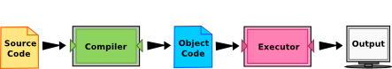

Table Of Contents
Previous topic
How to Think Like a Computer Scientist
Next topic
Variables, Expressions and Statements

How to Think Like a Computer Scientist
Variables, Expressions and Statements
The goal of this book is to teach you to think like a computer scientist. This way of thinking combines some of the best features of mathematics, engineering, and natural science. Like mathematicians, computer scientists use formal languages to denote ideas (specifically computations). Like engineers, they design things, assembling components into systems and evaluating tradeoffs among alternatives. Like scientists, they observe the behavior of complex systems, form hypotheses, and test predictions.
The single most important skill for a computer scientist is problem solving. Problem solving means the ability to formulate problems, think creatively about solutions, and express a solution clearly and accurately. As it turns out, the process of learning to program is an excellent opportunity to practice problem solving skills. That’s why this chapter is called, The Way of the Program.
On one level, you will be learning to program, a useful skill by itself. On another level, you will use programming as a means to an end. As we go along, that end will become clearer.
If problem solving is a central part of computer science, then the solutions that you create through the problem solving process are also important. In computer science, we refer to these solutions as algorithms. An algorithm is a step by step list of instructions that if followed exactly will solve the problem under consideration.
Our goal in computer science is to take a problem and develop an algorithm that can serve as a general solution. Once we have such a solution, we can use our computer to automate the execution. As noted above, programming is a skill which allows a computer scientist to take an algorithm and represent it in a notation (a program) that can be followed by a computer. These programs are written in programming languages.
Check your understanding
1.1.1: What is the most important skill for a computer scientist?
1.1.2: An algorithm is:
The programming language you will be learning is Python. Python is an example of a high-level language; other high-level languages you might have heard of are C++, PHP, and Java.
As you might infer from the name high-level language, there are also low-level languages, sometimes referred to as machine languages or assembly languages. Loosely speaking, computers can only execute programs written in low-level languages. Thus, programs written in a high-level language have to be processed before they can run. This extra processing takes some time, which is a small disadvantage of high-level languages. However, the advantages to high-level languages are enormous.
First, it is much easier to program in a high-level language. Programs written in a high-level language take less time to write, they are shorter and easier to read, and they are more likely to be correct. Second, high-level languages are portable, meaning that they can run on different kinds of computers with few or no modifications. Low-level programs can run on only one kind of computer and have to be rewritten to run on another.
Due to these advantages, almost all programs are written in high-level languages. Low-level languages are used only for a few specialized applications.
Two kinds of programs process high-level languages into low-level languages: interpreters and compilers. An interpreter reads a high-level program and executes it, meaning that it does what the program says. It processes the program a little at a time, alternately reading lines and performing computations.

A compiler reads the program and translates it completely before the program starts running. In this case, the high-level program is called the source code, and the translated program is called the object code or the executable. Once a program is compiled, you can execute it repeatedly without further translation.
Many modern languages use both processes. They are first compiled into a lower level language, called byte code, and then interpreted by a program called a virtual machine. Python uses both processes, but because of the way programmers interact with it, it is usually considered an interpreted language.
There are two ways to use the Python interpreter: shell mode and program mode. In shell mode, you type Python expressions into the Python shell, and the interpreter immediately shows the result. The example below shows the Python shell at work.
$ python3
Python 3.2 (r32:88445, Mar 25 2011, 19:28:28)
[GCC 4.5.2] on linux2
Type "help", "copyright", "credits" or "license" for more information.
>>> 2 + 3
5
>>> print("Hello world")
Hello world
The >>> is called the Python prompt. The interpreter uses the prompt to indicate that it is ready for instructions. We typed 2 + 3, and the interpreter evaluated our expression, and replied 5, and on the next line it gave a new prompt, indicating that it is ready for more input.
Working directly in the interpreter is convenient for testing short bits of code because you get immediate feedback. Think of it as scratch paper used to help you work out problems. Anything longer than a few lines should be put into a script.
Alternatively, you can write an entire program in a file and use the interpreter to execute the contents of the file as a whole. Such a file is often referred to as source code. For example, we used a text editor to create a source code file named firstprogram.py with the following contents:
print("My first program adds two numbers, 2 and 3:")
print(2 + 3)
By convention, files that contain Python programs have names that end with .py . Following this convention will help your operating system and other programs identify a file as containing python code.
$ python firstprogram.py
My first program adds two numbers, 2 and 3:
5
These examples show Python being run from a Unix command line. In other development environments, the details of executing programs may differ. Also, most programs are more interesting than this one.
Want to learn more about Python?
If you would like to learn more about installing and using Python, here are some video links. Installing Python for Windows shows you how to install the Python environment under Windows Vista, Installing Python for Mac shows you how to install under Mac OS/X, and Installing Python for Linux shows you how to install from the Linux command line. Using Python shows you some details about the Python shell and source code.
Check your understanding
1.2.1: Source code is another name for:
1.2.2: What is the difference between a high-level programming language and a low-level programming language?
1.2.3: Pick the best replacements for 1 and 2 in the following sentence.
When comparing compilers and interpreters, a compiler is like 1 while an interpreter is like 2.

This book provides two additional ways to execute Python programs. Both techniques are designed to assist you as you learn the Python programming language. They will help you increase your understanding of how Python programs work.
First, you can write, modify, and execute programs using a unique activecode interpreter that allows you to execute Python code right in the text itself (right from the web browser). Although this is certainly not the way real programs are written, it provides an excellent environment for learning a programming language like Python since you can experiment with the language as you are reading.
Take a look at the activecode interpreter in action. If we use the Python code from the previous example and make it active, you will see that it can be executed directly by pressing the run button. Try pressing the run button below.
(ch01_1)
Now try modifying the activecode program shown above. First, modify the string in the first print statement by changing the word adds to the word multiplies. Now press run. You can see that the result of the program has changed. However, it still prints “5” as the answer. Modify the second print statement by changing the addition symbol, the “+”, to the multiplication symbol, “*”. Press run to see the new results.
You can also make changes and save them for reloading later. Save and Load allow you to keep one copy of the program you are working on. For example, press the Save button now. You have just saved the current contents of the activecode window. Now make a few changes and press the Run button. You have changed the current program. Press Load to return your program to its previously saved state.
In addition to activecode, you can also execute Python code with the assistance of a unique visualization tool. This tool, known as codelens, allows you to control the step by step execution of a program. It also lets you see the values of all variables as they are created and modified. The following example shows codelens in action on the same program as we saw above. Note that in activecode, the source code executes from beginning to end and you can see the final result. In codelens you can see and control the step by step progress.
The examples in this book use a mixture of the standard Python interpreter, source code, activecode, and codelens. You will be able to tell which is which by looking for either the Python prompt in the case of a shell mode program, the run button for the activecode, or the forward/backward buttons for codelens.
|
Source Code
Step ? of ?
|
|
Program output:
|
Check your understanding
1.3.1: The activecode interpreter allows you to (select all that apply):
1.3.2: Codelens allows you to (select all that apply):
A program is a sequence of instructions that specifies how to perform a computation. The computation might be something as complex as rendering an html page in a web browser or encoding a video and streaming it across the network. It can also be a symbolic computation, such as searching for and replacing text in a document or (strangely enough) compiling a program.
The details look different in different languages, but a few basic instructions appear in just about every language.
Believe it or not, that’s pretty much all there is to it. Every program you’ve ever used, no matter how complicated, is made up of instructions that look more or less like these. Thus, we can describe programming as the process of breaking a large, complex task into smaller and smaller subtasks until the subtasks are simple enough to be performed with sequences of these basic instructions.
Check your understanding
1.4.1: A program is:
Programming is a complex process, and because it is done by human beings, it often leads to errors. Programming errors are called bugs and the process of tracking them down and correcting them is called debugging. Some claim that in 1945, a dead moth caused a problem on relay number 70, panel F, of one of the first computers at Harvard, and the term bug has remained in use since. For more about this historic event, see first bug.
Three kinds of errors can occur in a program: syntax errors, runtime errors, and semantic errors. It is useful to distinguish between them in order to track them down more quickly.
Check your understanding
1.5.1: Debugging is:
Python can only execute a program if the program is syntactically correct; otherwise, the process fails and returns an error message. Syntax refers to the structure of a program and the rules about that structure. For example, in English, a sentence must begin with a capital letter and end with a period. this sentence contains a syntax error. So does this one
For most readers, a few syntax errors are not a significant problem, which is why we can read the poetry of e. e. cummings without problems. Python is not so forgiving. If there is a single syntax error anywhere in your program, Python will display an error message and quit, and you will not be able to run your program. During the first few weeks of your programming career, you will probably spend a lot of time tracking down syntax errors. As you gain experience, though, you will make fewer errors and find them faster.
Check your understanding
1.6.1: Which of the following is a syntax error?
1.6.2: Who or what typically finds syntax errors?
The second type of error is a runtime error, so called because the error does not appear until you run the program. These errors are also called exceptions because they usually indicate that something exceptional (and bad) has happened.
Runtime errors are rare in the simple programs you will see in the first few chapters, so it might be a while before you encounter one.
Check your understanding
1.7.1: Which of the following is a run-time error?
The third type of error is the semantic error. If there is a semantic error in your program, it will run successfully, in the sense that the computer will not generate any error messages, but it will not do the right thing. It will do something else. Specifically, it will do what you told it to do.
The problem is that the program you wrote is not the program you wanted to write. The meaning of the program (its semantics) is wrong. Identifying semantic errors can be tricky because it requires you to work backward by looking at the output of the program and trying to figure out what it is doing.
Check your understanding
1.8.1: Which of the following is a semantic error?
One of the most important skills you will acquire is debugging. Although it can be frustrating, debugging is one of the most intellectually rich, challenging, and interesting parts of programming.
In some ways, debugging is like detective work. You are confronted with clues, and you have to infer the processes and events that led to the results you see.
Debugging is also like an experimental science. Once you have an idea what is going wrong, you modify your program and try again. If your hypothesis was correct, then you can predict the result of the modification, and you take a step closer to a working program. If your hypothesis was wrong, you have to come up with a new one. As Sherlock Holmes pointed out, When you have eliminated the impossible, whatever remains, however improbable, must be the truth. (A. Conan Doyle, The Sign of Four)
For some people, programming and debugging are the same thing. That is, programming is the process of gradually debugging a program until it does what you want. The idea is that you should start with a program that does something and make small modifications, debugging them as you go, so that you always have a working program.
For example, Linux is an operating system kernel that contains millions of lines of code, but it started out as a simple program Linus Torvalds used to explore the Intel 80386 chip. According to Larry Greenfield, one of Linus’s earlier projects was a program that would switch between displaying AAAA and BBBB. This later evolved to Linux (The Linux Users’ Guide Beta Version 1).
Later chapters will make more suggestions about debugging and other programming practices.
Check your understanding
1.9.1: The difference between programming and debugging is:
Natural languages are the languages that people speak, such as English, Spanish, and French. They were not designed by people (although people try to impose some order on them); they evolved naturally.
Formal languages are languages that are designed by people for specific applications. For example, the notation that mathematicians use is a formal language that is particularly good at denoting relationships among numbers and symbols. Chemists use a formal language to represent the chemical structure of molecules. And most importantly:
Programming languages are formal languages that have been designed to express computations.
Formal languages tend to have strict rules about syntax. For example, 3+3=6 is a syntactically correct mathematical statement, but 3=+6$ is not. H2O is a syntactically correct chemical name, but 2Zz is not.
Syntax rules come in two flavors, pertaining to tokens and structure. Tokens are the basic elements of the language, such as words, numbers, and chemical elements. One of the problems with 3=+6$ is that $ is not a legal token in mathematics (at least as far as we know). Similarly, 2Zz is not legal because there is no element with the abbreviation Zz.
The second type of syntax rule pertains to the structure of a statement— that is, the way the tokens are arranged. The statement 3=+6$ is structurally illegal because you can’t place a plus sign immediately after an equal sign. Similarly, molecular formulas have to have subscripts after the element name, not before.
When you read a sentence in English or a statement in a formal language, you have to figure out what the structure of the sentence is (although in a natural language you do this subconsciously). This process is called parsing.
For example, when you hear the sentence, “The other shoe fell”, you understand that the other shoe is the subject and fell is the verb. Once you have parsed a sentence, you can figure out what it means, or the semantics of the sentence. Assuming that you know what a shoe is and what it means to fall, you will understand the general implication of this sentence.
Although formal and natural languages have many features in common — tokens, structure, syntax, and semantics — there are many differences:
Formal languages mean exactly what they say. On the other hand, natural languages are full of idiom and metaphor. If someone says, “The other shoe fell”, there is probably no shoe and nothing falling.
Tip
You’ll need to find the original joke to understand the idiomatic meaning of the other shoe falling. Yahoo! Answers thinks it knows!
People who grow up speaking a natural language—everyone—often have a hard time adjusting to formal languages. In some ways, the difference between formal and natural language is like the difference between poetry and prose, but more so:
Here are some suggestions for reading programs (and other formal languages). First, remember that formal languages are much more dense than natural languages, so it takes longer to read them. Also, the structure is very important, so it is usually not a good idea to read from top to bottom, left to right. Instead, learn to parse the program in your head, identifying the tokens and interpreting the structure. Finally, the details matter. Little things like spelling errors and bad punctuation, which you can get away with in natural languages, can make a big difference in a formal language.
Check your understanding
1.10.1: The differences between natural and formal languages include:
1.10.2: True or False: Reading a program is like reading other kinds of text.
Traditionally, the first program written in a new language is called Hello, World! because all it does is display the words, Hello, World! In Python, the source code looks like this.
print("Hello, World!")
This is an example of using the print function, which doesn’t actually print anything on paper. It displays a value on the screen. In this case, the result is the words:
Hello, World!
Here is the example in activecode. Give it a try!
(ch01_2)
The quotation marks in the program mark the beginning and end of the value. They don’t appear in the result.
Some people judge the quality of a programming language by the simplicity of the Hello, World! program. By this standard, Python does about as well as possible.
Check your understanding
1.11.1: The print function:
As programs get bigger and more complicated, they get more difficult to read. Formal languages are dense, and it is often difficult to look at a piece of code and figure out what it is doing, or why. For this reason, it is a good idea to add notes to your programs to explain in natural language what the program is doing. These notes are called comments.
A comment in a computer program is text that is intended only for the human reader - it is completely ignored by the interpreter. In Python, the # token starts a comment. The rest of the line is ignored. Here is a new version of Hello, World!.
(ch01_3)
Notice that when you run this program, it still only prints the phrase Hello, World! None of the comments appear. You’ll also notice that we’ve left a blank line in the program. Blank lines are also ignored by the interpreter, but comments and blank lines can make your programs much easier for humans to parse. Use them liberally!
Check your understanding
1.12.1: What are comments for?
{kind=link}